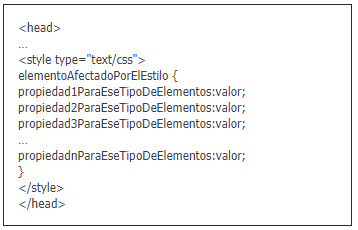

Diseñar un OVI para el curso de diseños de sitios web a traves de CSS3: Estilos internos y Externos,Selectores CSS
Significado.
Texto ¿Que es?: https://www.ecured.cu/CSS3#:~:text=CSS3%20es%20un%20lenguaje%20usado,y%20por%20extensi%C3%B3n%20en%20XHTML).
Formas de aplicar CSS.
Texto e Imagen: https://www.aprenderaprogramar.com/
Selectores CSS
Texto e Imagen:https://developer.mozilla.org/es/docs/Web/CSS/Selectores_CSS
CSS es un lenguaje usado para definir la presentación de un documento estructurado escrito en HTML o XML (y por extensión en XHTML). El W3C(World Wide Web Consortium) es el encargado de formular la especificación de las hojas de estilo que servirán de estándar para los agentes de usuario o navegadores. La idea que se encuentra detrás del desarrollo de CSS es separar la estructura de un documento de su presentación. La información de estilo puede ser adjuntada como un documento separado o en el mismo documento HTML. En este último caso podrían definirse estilos generales en la cabecera del documento o en cada etiqueta particular mediante el atributo "style".
Ya hemos visto que existen estilos por defecto que aplican automáticamente los navegadores web cuando no hay estilos especificados, así como que podemos embeber código CSS en las propias etiquetas de HTML, “en línea”. Vamos a ver ahora dos formas adicionales de aplicar estilos CSS: en la parte inicial del documento HTML (aplicación de estilos interna o CSS interno) o en un archivo de extensión .css independiente del archivo HTML (aplicación de estilos externa o CSS externo).
Vamos a ver ahora cómo podemos definir esos estilos en la cabecera del documento HTML usando la siguiente sintaxis:
 Las diferentes propiedades y valores se pueden poner en una misma línea o en distintas líneas según se prefiera (siempre separados mediante punto y coma).
Dentro de las etiquetas
Aunque el CSS interno nos permite unificar en una declaración todos los estilos para un archivo html, seguimos teniendo el problema de tener que repetir la definición de estilos en la cabecera de cada uno de los archivos html de nuestro desarrollo web. Si el desarrollo tiene pocos archivos quizás sea menos problemático, pero cuando el desarrollo tiene cientos o miles de archivos sí se convierte en un verdadero problema, ya que cada vez que introdujéramos cambios habría que hacerlo en los cientos o miles de archivos de que constara el desarrollo.
Para solventar esta solución se ideó la declaración externa de CSS, basada en declarar los estilos CSS en un archivo independiente que puede servir como referente para dotar de estilos a decenas, cientos o miles de archivos html, que únicamente deberán invocar el nombre de archivo utilizando una sintaxis específica.
De este modo un cambio en los estilos habrá que hacerlo únicamente en el archivo de estilos correspondiente, lo cual supone una gran ventaja. Incluso un cambio completo de los estilos de una página web se puede conseguir simplemente sustituyendo el archivo correspondiente.
Vamos a generar un archivo de estilos independiente. Para ello abre Notepad++ (o el editor de texto que estés usando) y crea un archivo con el siguiente contenido:
Selecciona todos los elementos que coinciden con el nombre del elemento especificado.
Sintaxis: eltname
Ejemplo: input se aplicará a cualquier elemento input.
Selecciona todos los elementos que tienen el atributo de class especificado.
Sintaxis: .classname
Ejemplo: .index seleccionará cualquier elemento que tenga la clase "index"
Selecciona un elemento basándose en el valor de su atributo id. Solo puede haber un elemento con un determinado ID dentro de un documento.
Sintaxis: #idname
Ejemplo: #toc se aplicará a cualquier elemento que tenga el ID "toc".
Selecciona todos los elementos. Opcionalmente, puede estar restringido a un espacio de nombre específico o a todos los espacios de nombres.
Sintaxis: * ns|* *|*
Ejemplo: * se aplicará a todos los elementos del documento.
Selecciona elementos basándose en el valor de un determinado atributo.
Sintaxis: [attr] [attr=value] [attr~=value] [attr|=value] [attr^=value] [attr$=value] [attr*=value]
Ejemplo: [autoplay] seleccionará todos los elementos que tengan el atributo "autoplay" establecido (a cualquier valor).